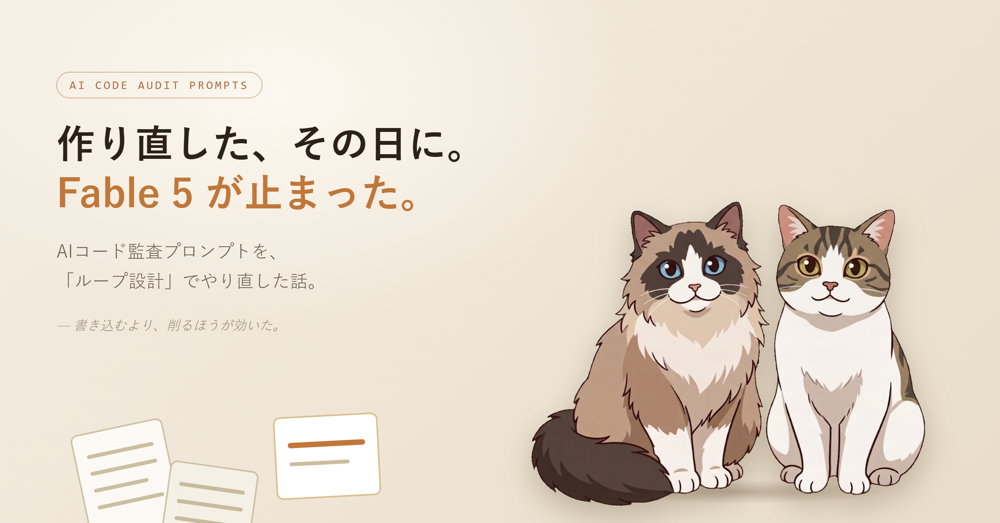

直近の開発はほぼAIエージェント任せで、その流れでAIにコード監査をさせるプロンプト集を公開しています。その中の Claude Fable 5 向け 1 本を、今回ごっそり書き直しました。きっかけは「自分の作りが間違っていた」と気づいたこと。ひとことで言うと、指示を書きすぎていたんです。
監査プロンプトというのは、AIに「このコードをこういう観点で調べて、見つけた問題をこう確かめて、こう直して」とお願いする長い文章です。前の Fable 5 版は、その手順をかなり細かく書き込んでいました。
丁寧に書けば書くほど精度が上がる、と素朴に信じていた構成です。実際それで動くし、悪くはなかった。ただ、もっと良くできる余地が残っていることに、あとから気づきました。
細かい手順を渡すほど、モデルは「言われた通り」に動こうとして、自分で深く考える余地が減る。良かれと思った丁寧さが、たぶん足を引っ張っていた——ここから、直し方の方針が決まりました。手順で縛るのをやめて、自分で気づいて直せる仕組みの方を作る、と。
手応えが一番大きかったのはここでした。前の版では、コードを調べたエージェントが自分の見つけた問題を自分で「これは本当に正しいか?」と確かめていた。一人二役です。
でも、自分が出した答えのアラは、自分ではなかなか見えません。テスト前に自分で答え合わせをして間違いに気づけないのと同じ構図です。そこで、確かめる作業だけを別エージェントに渡しました。
調べた本人の思い込みが入らない分、あやしいものがちゃんとふるい落とされる。これは効きました。
2つ目は、「どうなったら完了か」の決め方です。前は、完了条件を箇条書きで並べていただけ。AIは、だいたいできたところで「終わりました」と言いがちです。
今回は完了条件を採点表の形にして、全項目が満たされたと別エージェントが判定するまで終われない、というループにしました。中途半端なところで切り上げさせない仕掛けです。
3つ目は、作業中のメモの取り方です。前は、やったことを書き留めるだけのログでした。今回は、流れをこう変えました。
失敗を、ちゃんと次に活かす形にした、という感じです。そして最後に、引き算もしました。細かい手順は削って、ゴールと「やってはいけないこと」だけを渡す。進め方そのものは、モデルに任せる。書きすぎを、やめました。
これは小さな話ですが、前はファイル名を claude_fable5 のように「5」付きにしていました。Fable はこの先 6, 7 と上がっていくはずなので、そのたびに名前が古びて、新しいモデルが対象外だと誤解されるのも嫌だなと。
なので、バージョン番号を外して claude_fable に統一しました。次のモデルが出ても、名前はそのまま使い続けられます。中身に「例: Fable 5」とだけ添えておく形に。
使い方は、変わらず簡単です。Claude Code でモデルを Fable に切り替えて、リポジトリに置いたプロンプトを「これで監査して」と頼むだけ。強度やスコープ、調べる観点を引数で絞ることもできますが、全部省略してもデフォルトで動きます。
そして、前の版から変えなかった約束ごとが3つあります。
安心して任せられる範囲は守ったまま、中身の賢さだけ上げたつもりです。
ここまで読むと「じゃあ他のも全部そうやって削ればいい」と思うかもしれません。でも、やりませんでした。このプロンプト集には、Fable 以外にも複数AIを並列で走らせる版や、別ツール向けの版があります。そっちは、わざと細かく指示を書いたまま残しています。
細かさが効くかどうかは、相手のモデルや動かし方で変わるんです。「指示は削るのが正解」と一般化したくなったけど、それは Fable に限った話でした。相手によって、ちょうどいい伝え方は変わる。
ただ、どの版にも共通で1つだけ足したルールがあります。「自分で確かめていないことを、できたことにして報告しない」。これはモデルを問わず効くはずです。
ここまで書き終えた、まさにその日のことです。Fable 5 が止まりました。アメリカ政府の輸出管理の指示で、外国籍の利用が一律ストップ。日本にいる自分も、いまは Fable 5 を呼べません。
Fable 5 のために気合いを入れて作り直したプロンプトが、肝心の Fable 5 を呼べない。タイミングが良すぎて、思わず笑ってしまいました。
ただ、今回直した中身——検証を別の役に任せる、終わりを採点表で決める、メモを学ぶ記憶にする——は、どのモデルでも効く「ループの設計」の話です。当面は手元の別のモデルで同じ考え方を使いながら、Fable が戻ってきたら、このプロンプトをそのまま投げるつもりです。戻ってきますように。